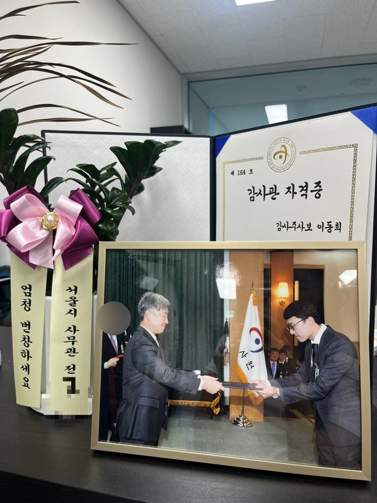
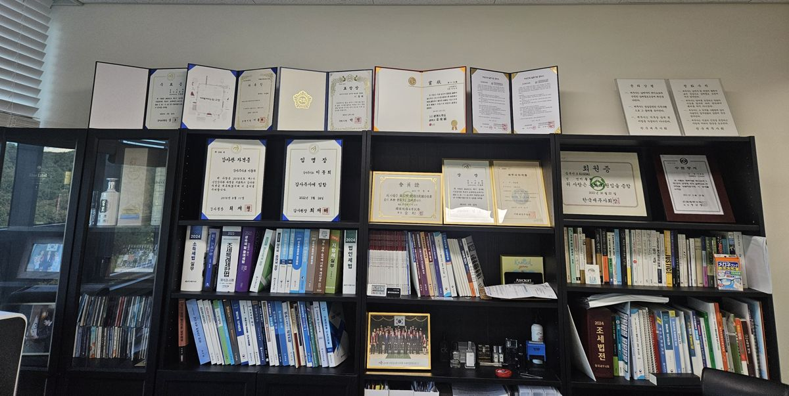
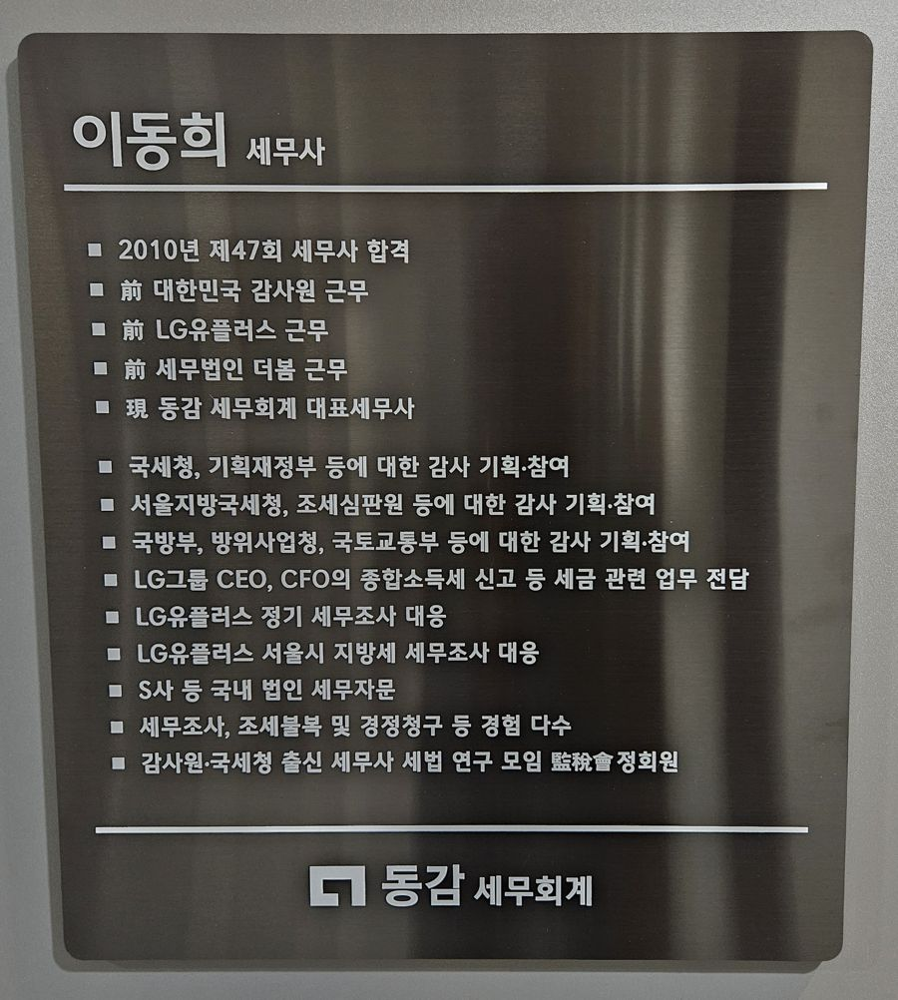
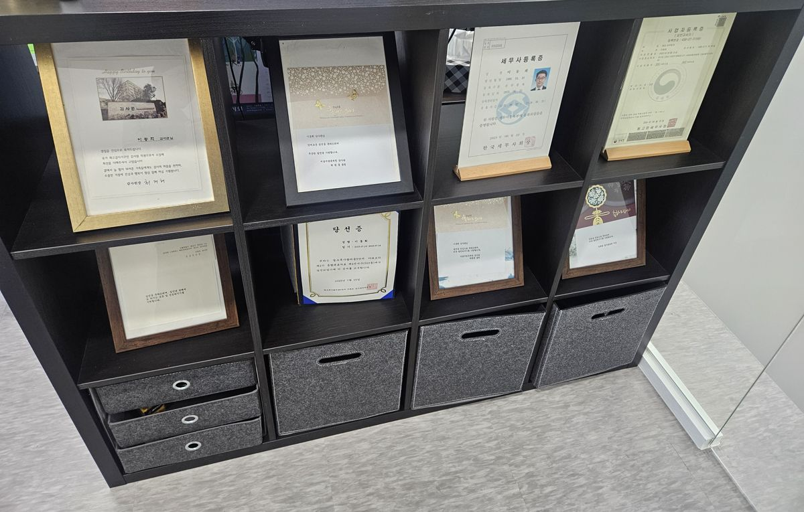
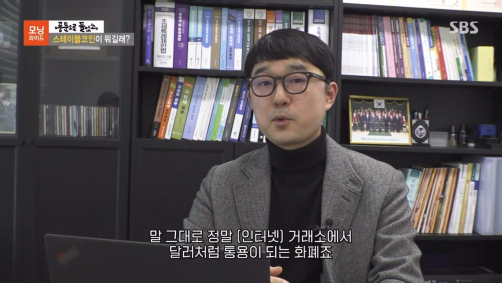
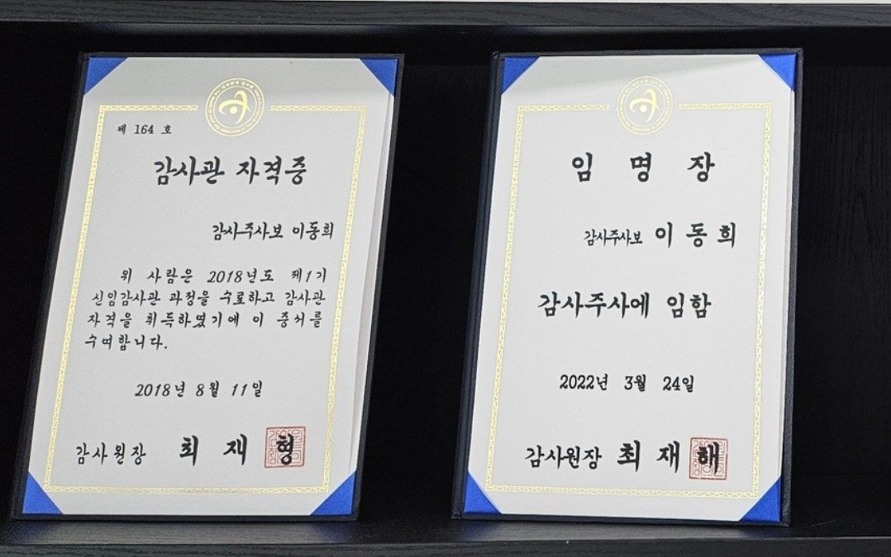
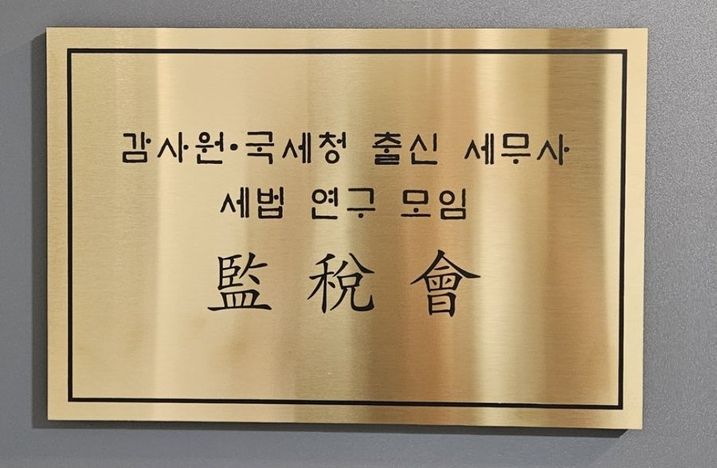
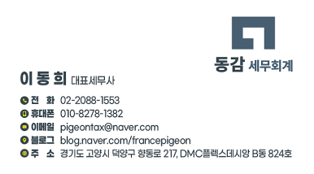
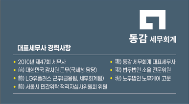

About
안녕하세요.
동감 세무회계 이동희 세무사입니다.
저는 2010년 제47회 세무사 시험을 통해 세무사 자격을 취득했습니다.
세무사 자격증을 취득한 뒤에는 압구정에 있는 세무법인에서 수습세무사 생활을 한 뒤 LG유플러스 금융팀으로 입사하여 자금의 조달, 집행 업무 등을 수행한 뒤 세무회계팀으로 옮겨 원천세, 부가세, 법인세, 세무조사 대응 등 다양한 업무를 수행하였습니다.
그 후 7급 공무원 시험을 통해 감사원 감사관으로 입직하여, 국세청, 서울지방국세청, 기획재정부 등에 대한 감사를 수행하였습니다.
이후 마포구에 있는 세무법인에서 다시 세무사 사무실의 실전 감각(?)을 익힌 뒤 2023년 6월 26일 동감 세무회계 사무실을 열었습니다.
현재는 대표세무사로 근무하면서, 법무법인 소울에서 전문위원, 노무법인 노무케어에서 고문 세무사 역할을 하는 등 다양한 업무를 수행하고 있습니다.
민·관을 아우르는 경험과 업무능력, 친절함으로
가장 나은 세무서비스를 제공하겠습니다.
동감 세무회계 대표세무사 이동희
Strength
이동희 세무사의 강점
-
대기업 + 공무원
기업의 업무와 공무원 업무를 두루 경험했습니다
아직 젊지만 다양한 경험을 했고, 이로 인해 숙련된 업무능력과 대관 능력을 갖추고 있다고 자부합니다. 대기업에서 생활했기 때문에 높은 업무 수행 능력으로 다양한 상황에 유연하게 대처할 수 있고, 공무원 생활을 했기 때문에 행정적인 일에 대해서도 능숙하게 해낼 수 있습니다.
-
감사원 출신
국세청이 어떻게 일하는지 압니다
감사원에서 근무하면서 국세청, 일선 세무서 등에서 어떻게 일하는지, 어떤 의도를 갖고 어떤 절차를 통해 이를 수행해 내는지에 대해 숙지했습니다. 국세청 조사관분들이 진행한 세무조사 등의 문제점을 찾아내고 지적하기 위해 수많은 세무조사 사례를 보고 분석한 것은 저의 커다란 자산입니다.
-
친절하고 상세하게
고객의 입장에서, 고객의 이득만 생각합니다
무엇보다도 친절하고 상세합니다. 최대한 쉽게 이해하실 수 있도록 상세히 설명드리려 노력합니다. 함께하는 업체 중 단 한 곳도 저희를 떠나지 않으셨고, 고객분들의 강력한 신뢰를 받으며 즐거운 관계를 유지하고 있음은 저의 가장 큰 자부심입니다.
Cases
주요 절세·환급 사례
경정청구와 과세예고통지 대응으로 고객께 돌려드린 세금입니다. 줄어든 금액이 큰 순서이며, 누르면 블로그의 자세한 이야기로 이동합니다.
사례 8건 더 보기
Reviews
고객님들이 남겨주신 후기
네이버 예약과 온라인 상담에서 남겨주신 후기를 그대로 옮겼습니다.
“내가 하고 있는 업종에 대한 이해도가 굉장히 높고 그뿐만 아니라 사람에 대한 이해도도 굉장히 높다. 그만큼 세심하게 친절하시고 세심하게 이해해서 알아서 정말 잘 해주신다. 이분을 만난 건 행운이라고 생각한다.”
세무 상담받으러 이곳저곳 상담받다가 다른 곳은 너무 애매하게 얘기해 주시고, 제대로 된 정보를 얻지 못해서 답답한 마음에 AI한테 적극적이고 잘하는 세무사 알려달라 하니까 알려줘서 바로 남는 시간에 예약했는데 왜 추천했는지 알 것 같아요!!! 정말 2주 넘게 답답하고 신경 쓰여서 잠도 제대로 못 잤는데 명쾌하게 잘 상담해 주시고 자세히 꼼꼼하게 설명해 주셔서 상담 이후로 맘 편해졌네요!!! 주변에 많이 알릴게요!!!
이번에 증여세 관련해서 처음으로 신고를 하게 되었는데, 너무나도 복잡하고 걱정이 많았습니다. 그런데 세무사님께서 친절하게 하나하나 설명해 주시고, 필요한 서류나 절차도 꼼꼼히 챙겨주셔서 덕분에 무사히 신고를 마칠 수 있었습니다. 답변도 빠르고 명확해서 신뢰가 갔고, 처음부터 끝까지 매우 만족스러웠습니다.
세무에 대해 아무것도 몰라 세금이 무서웠는데 ㅠㅠ 하나부터 차근차근 친절하게 알려주셔서 두려움이 많이 사라졌습니다!! 많은 서칭 끝에 블로그를 보고 믿음이 가서 일부러 일산에서 갔는데 향동까지 가길 잘했다는 생각이 들더군요. 앞으로 믿고 맡길게요!
세알못 초보사업자입니다. 방문 전에는 세무 일 하시면 좀 차갑지 않으실까 생각했는데 제 선입견이었어요. 이야기를 정말 잘 들어주시고 세금에 무지한 제게 너무 친절히 잘 설명해 주셨어요. 사업장과 더 가까운 곳도 있었는데 인상과 운영하시는 블로그 글들을 보고 왠지 믿음이 가서 상담 예약했어요. 상담이 만족스러워 기장 계약까지 결정하게 되었습니다.
진짜 세무 관련된 내용 하나도 몰라서 제일 저렴한 거 예약하고 상담받았어요!! 너무 친절하시고, 진짜 전문가라는 느낌을 받아서 안심되었어요. 다른 데 상담도 받아봤는데, 경력에서 나오는 전문감이 남다르더라고요. 앞으로 믿고 맡기기로 했습니다 😊
회사 부가세 신고 때문에 예약 잡고 방문했는데 세무사님 친절하셨고 물어보는 거 막힘없이 차분하게 설명해 주셔서 믿음이 갔습니다. (추가적으로 세금 줄이는 여러 가지 팁들 알려주셔서 좋았음) 기장 맡겨야 되는지 궁금해서 갔는데 기장은 안 해도 되고 신고만 맡겨도 된다고 하셔서 신고만 맡기고 왔는데, 사업하는 지인들도 여기 소개해 주려고 마음먹을 정도로 마음에 들었습니다.
모임에서 알게 된 친한 사장님이 소개해 주셔서 상담받았는데 만족합니다. 낯을 좀 가려서 너무 친절하면 부담스러워하는 편인데 담백하게 친절하셔서 되게 좋았어요. 사업하면서 세무회계가 제일 어려운 부분이었는데 시원하게 긁어주셨어요. 추천합니다.
세무 관련해서 궁금한 것이 있어 찾아뵈었는데 음성부터 친절하시고 상냥한 안내 받았습니다. 세무에 대해 몰라 이런저런 것들 여쭤봤는데 친절하고 자세히 알려주셔서 정말 좋았습니다. 세무 관련 궁금한 것들이 있는 분들 세무사님께 상담받아 보시는 것을 추천드립니다!
연말정산+종소세 문제로 혼자 서치하고 고민하다가 도저히 해결이 안 나서 상담까지 신청했는데, 10분이라는 시간 만에 고민하던 게 깔끔하게 해결되었습니다! 사회초년생이라 세금 문제 너무 어려웠는데 친절한 상담 감사합니다!
정말 빠르고 신속하게 해주십니다. 다른 세무사님들과는 확실히 다른 것 같은 느낌입니다!! 완벽하십니다. 다음에도 세무에 관련된 것은 이동희 세무사님에게 조언을 구할 것입니다.
답답했던 상황이 어느 정도 정리되는 상담이었습니다~ 목소리도 좋으시고 상담도 너무 친절하게 잘 해주셔서 더 신뢰가 갔습니다~ 이 한 번의 상담으로 든든한 아는 세무사님이 생긴 것 같은… 감사했습니다~
매우 친절하시고, 정확하게 상담해 주십니다. 인터넷에 찾아보았을 때에도 헷갈리고 애매한 부분이 많았는데, 세무사님이 정확하게 알려주셔서 도움이 많이 된 것 같습니다.
어렴풋이 알고 있던 부분을 확실하게 짚어주셔서 좋았고요! 전혀 모르고 있던 부분도 알려주셔서 너무 감사합니다~ 덕분에 수월~하게 법인 낼 수 있을 것 같습니다!
궁금한 점에 대해서 아주 명쾌하게 답변해 주셨습니다. 고민하던 문제였는데 덕분에 방향이 잘 잡아졌습니다. 세무사님 추천합니다.
종합소득세 신고 잘못해서 걱정 많았는데 시원하게 해결해 주신 것 같아 좋네요. 긴 시간 톡 상담 감사합니다.
채팅 상담 받았는데 답변 정말 친절하시고 상세하게 잘해주십니다.
응답도 빠르시고 전문적인 답변이 신뢰가 갑니다.
경력을 토대로 자세하고 명확히 알려주셨습니다, 감사합니다.
깔끔하고 정확하고 빠르시네요! 너무 감사합니다!
제가 원하는 답변에 대해 정확하고 빠르게 답변 주셨습니다 :) 감사합니다!
빠르고 해박한 답변 감사합니다.
정말 친절하시고 전문적인 상담 해주셔서 감사합니다.
친절하고 전문적인 상담 감사합니다.
궁금한 점에 대해 친절하게 잘 설명해 주십니다. 아, 그리고 커피도 맛있었습니다.
Career
걸어온 길
- 2023. 6. ~ 현재동감 세무회계 대표세무사법무법인 소울 전문위원, 노무법인 노무케어 고문 세무사
- 2022. 12. ~ 2023. 5.세무법인 더봄기장 업무, 세무조사 대응
- 2018. 2. ~ 2022. 11.감사원 감사관재정경제감사국 제3과(국세청 감사), 국방감사단 제1과
- 2011. 7. ~ 2016. 5.LG유플러스금융팀(자금 조달·집행), 세무회계팀(원천세·부가세·지방세·법인세)
- 2011. 8.홍익대학교 경영학과 졸업
- 2010.세무사 합격(제47회)
감사원에서
- '과세대상 재산가액 평가실태' 등 국세청, 기획재정부, 서울지방국세청, 조세심판원에 대한 감사 기획 및 참여
- '국가통계시스템 운영 및 관리실태' 등 국토교통부, 한국부동산원에 대한 감사 기획 및 참여
- 육군본부, 국방과학연구소 기관운영감사 등 국방부, 방위사업청에 대한 감사 기획 및 참여
LG유플러스에서
- 2015년 서울지방국세청 정기 세무조사, 2014년 서울시 지방세 세무조사 대응
- CEO, CFO의 종합소득세 신고 등 세금 업무 전담
- LG유플러스 용산 본사 이전, 안양 IDC센터 취득 등 지방세 관련 업무 주관
- LG그룹 기업세무회계실무 성적 우수(LG그룹 전체 1위)
- ABS(Asset-Backed Securities) 발행 등 자금조달 업무 관여
지금 하고 있는 일
- 법무법인 소울 전문위원
- 노무법인 노무케어 고문
- 감사원·국세청 출신 세무사 세법 연구모임 감세회(監稅會) 정회원
- 세무조사, 조세불복, 경정청구 등
- 상속, 증여, 양도
- 세무기장, 신고 등 세무 대리
- 그 외 모든 세금 관련 업무
Gallery
사진으로 보는 이동희 세무사







"모든 고객의 일을 제 일로 여기고,
아는 것도 한 번 더 확인하며,
더 나은 방법을 끝까지 찾겠습니다."
언제든 편하게 상담하세요
어려움이 있으시다면 언제든 저희와 상담해 주세요. 가장 편하고 가까우며, 가장 믿음직스러운 사람으로서 언제나 충실히 도움을 드리겠습니다.
- 주소
- 경기도 고양시 덕양구 향동로 217 DMC플렉스데시앙 B동 824호
- 사무실
- 02-2088-1553
- 이메일
- pigeontax@naver.com
- 지도
- 네이버 지도에서 보기
명함

